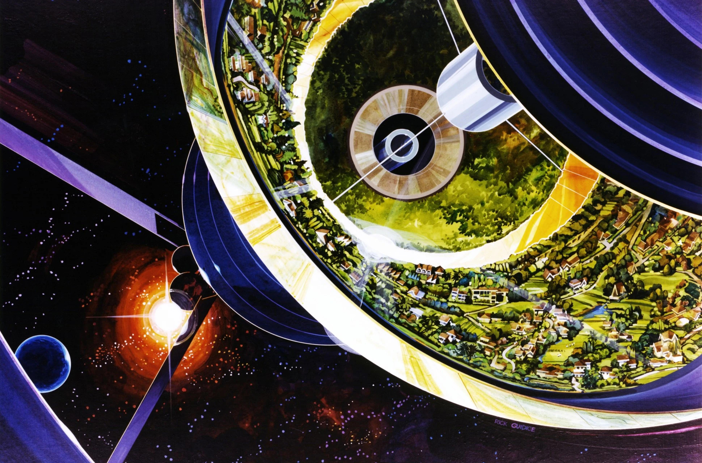

NEW UTOPIAS
EMERGED
Not a happy place, not an error, but a dystopian consensual hallucination. What in some years would become what we understand as Internet was first born out of gritty cyberpunk fiction, a cyberspace imagined as a trash fire in response to a trash fire. So how did this apocalyptic vision—written in the shadows of the Cold War and the coming nuclear annihilation—become utopian? The aspiration for a space of freedom, escape, and libertarian self-interest rises from individual voices of freedom that ultimately erased so many people. Dystopia created utopia, as utopia created dystopia. The juxtaposition of expectations on behalf of an immaterial space propelled us into an everlasting world of idealism.
[A] Chun, Wendy. 2021. Discriminating Data: Correlation, Neighborhoods, and the New Politics of Recognition.
[B] Crawford, Kate. 2021. Atlas of AI: Power, Politics, and the Planetary Costs of Artificial Intelligence.

Illustrations of conceptual megastructures
for NASA (1975), by Rick Guidice
Otherwordly
cyberspace We need to remember that cyberspace was never meant to be a happy place. (...) Described as a “consensual hallucination,” (...) this bodiless exultation and stealthy, rebellious power explain why “pioneers” mislabeled the Internet “cyberspace.”
Cofounder of EFF, Barlow asked the “governments of the Industrial World, you weary giants of flesh and steel,” to leave cyberspace, “the new home of Mind,” alone. Even though these governments had built its infrastructure, Barlow insisted that they, as representatives of the past, had “no sovereignty where we [the future] gather.”
Cyberspace was always about libertarian exceptionalism, transgression and exit, (...) a form of liberation from state power and bodily limitations.
[A]
Hopeful
ignorance “We run everything. We’ve disrupted absolutely everything. Politics, finance, education, media, relationships, (...) we’ve put ourselves in the middle of everything, we’ve absolutely won.”
The failure of cyberspace to erase racial discrimination and the dystopian plans of “Sovereign Individuals” should be enough to disprove this logic. Even as “utopian” dreams of cyberspace have faded, however, the hopeful ignorance behind them has endured, giving rise to machine learning programs that, by ignoring race, perpetuate racism.
[A]